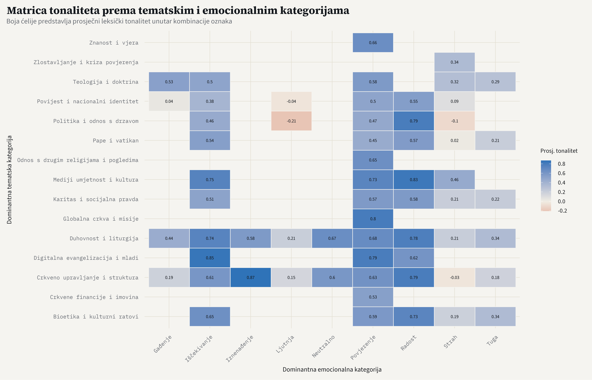
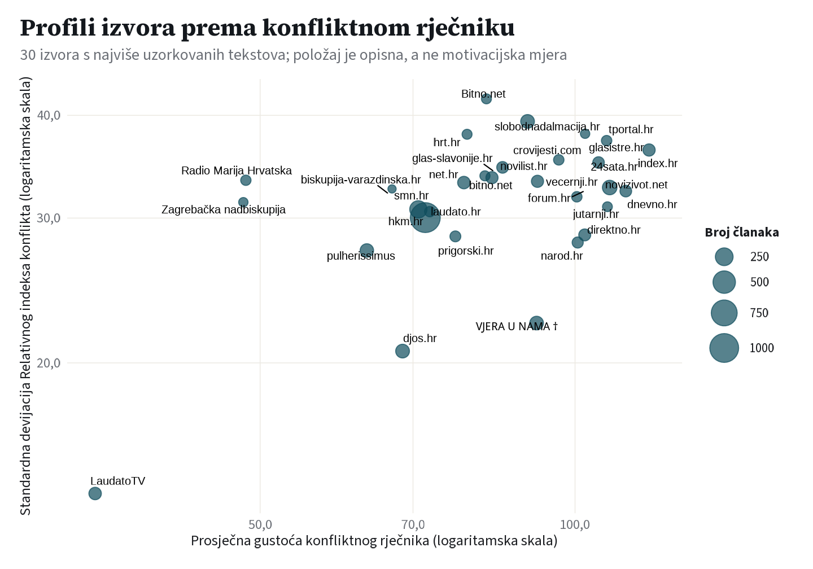
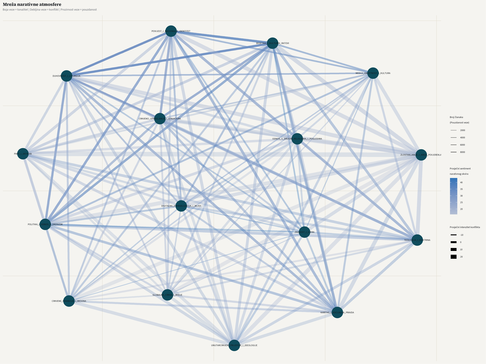

Nakon kartografiranja aktera i platformi te identifikacije tematskih kategorija, ova treća analitička mapa usmjerava se na najsuptilniju dimenziju digitalnog katoličkog diskursa. Mapa se bavi pitanjem atmosfere komunikacijskog prostora, odnosno načinima na koji se teme artikuliraju. Fokus je na emocionalnom tonalitetu, psihološkim apelima i intenzitetu konfliktnog jezika koji karakterizira različite narativne okvire. Ovaj pristup nadilazi tradicionalne binarne klasifikacije sentimenta, uvodeći višeslojne, kontekstualno svjesne metrike koje omogućuju dubinsko razumijevanje komunikacijskih strategija. Analitički okvir strukturiran je u tri komponente.
Prva komponenta obuhvaća dvoslojnu emocionalnu analizu koja razdvaja površinski tonalitet teksta od dubinskih psiholoških procesa koji se u njemu aktiviraju. Druga komponenta je relativni indeks konflikta koji mjeri neočekivanu agresivnost jezika u odnosu na kontekstualne osnovne (baseline) karakteristike medija i teme. Treća komponenta uključuje mrežu narativne atmosfere koja vizualizira kako se emocionalni tonalitet i intenzitet konflikta mijenjaju kada se različite tematske kategorije kombiniraju u šire narativne okvire.
Dvoslojna emocionalna analiza diskursa
Za kvalitetno razumijevanje atmosfere potrebno je razlikovati dvije dimenzije. Prva se odnosi na tonalitet, odnosno pozitivnu ili negativnu valencija teksta mjerenu leksičkim sentimentom. Druga se odnosi na psihološke procese, odnosno emocionalne okvire poput straha, nade, povjerenja ili ljutnje kroz koje se poruka artikulira i koji aktiviraju specifične kognitivne i afektivne odgovore kod publike.
Matrica tonaliteta i psiholoških procesa
Sljedeća vizualizacija predstavlja dvodimenzionalnu matricu koja prikazuje interakciju između tematskih kategorija i psiholoških procesa. Boja svake ćelije označava prosječni tonalitet tekstova koji pripadaju kombinaciji određene teme i emocionalnog okvira. Plave nijanse označavaju pozitivan tonalitet, crvene nijanse negativan, dok desni stupac agregira prosječni sentiment svake tematske kategorije.

Ova matrica otkriva sofisticirane mehanizme medijskog uokvirivanja i donosi nekoliko analitičkih uvida:
Kontekstualna ovisnost tonaliteta. Tonalitet pojedine tematske kategorije nije inherentna karakteristika sadržaja, već rezultat strateškog izbora emocionalnog okvira. Gotovo sve tematske kategorije manifestiraju negativan tonalitet kada su artikulirane kroz psihološke okvire Ljutnje, Straha ili Tuge. Nasuprot tome, okviri Povjerenja, Radosti i Iščekivanja gotovo univerzalno proizvode pozitivan tonalitet. Ovo potvrđuje da mediji ne prenose neutralne informacije, već aktivno konstruiraju atmosferu strateškim odabirom emocionalnog registra.
Identifikacija kritičnih narativnih zona. Tematske kategorije poput Pape i Vatikan te Politika i odnos s državom pokazuju najveći raspon sentimenata, od izrazito negativnih do izrazito pozitivnih. Ove kategorije predstavljaju glavna bojna polja narativa gdje izbor emocionalnog okvira ima najsnažniji učinak na oblikovanje percepcije publike.
Paradoksalna uloga emocije Gađenja. Analiza otkriva fascinantnu asimetriju. Kada je Gađenje usmjereno prema temi Politike i odnosa s državom, najvjerojatnije u kontekstu kritike političke korupcije ili nemoralnosti, rezultira pozitivnim sentimentom koji signalizira moralnu osudu. Međutim, kada je ista emocija usmjerena prema temi Pape i Vatikana, u kontekstu unutarcrkvenih skandala ili problema, generira najnegativniji sentiment u cijeloj matrici.
Ljutnja u temama poput Politike i odnosa s državom nije samo statistička pojava. Ona odražava stvarne komunikacijske dinamike u hrvatskim medijima, posebno u raspravama oko crkvenih komentara na zakonske prijedloge ili političke odluke. Publika izražava frustraciju i neslaganje kroz specifične obrasce interakcije, uključujući kritičke komentare, dijeljenja sadržaja s negativnim tonalitetom i reakcije koje signaliziraju ljutnju. Ova ljutnja predstavlja manifestaciju dubljih društvenih tenzija oko odnosa između religijske i sekularne sfere, gdje crkveni stavovi prema političkim pitanjima često postaju katalizatori polarizacije.
Relativni indeks konflikta kao kontekstualno prilagođena metrika
Tradicionalne metrike intenziteta konflikta ne uzimaju u obzir kontekstualne baseline karakteristike. Korištenje konfliktnog vokabulara u članku o povijesnim ratnim događajima nije ekvivalentno njegovoj uporabi u članku o liturgijskim praksama. Relativni indeks konflikta (RIK) predstavlja metodološku inovaciju koja mjeri koliko je pojedini tekst neočekivano agresivniji ili pomirljiviji od baseline očekivanja temeljenog na prosječnom diskursu njegovog izvora i njegove tematske kategorije.
Sljedeći grafikon koristi RIK za identifikaciju i klasifikaciju medijskih strategija u korištenju konfliktnog jezika. Horizontalna os predstavlja prosječnu, baznu razinu konfliktnog jezika karakterističnu za svaki medij. Vertikalna os predstavlja varijabilnost u korištenju konfliktnog jezika, mjerenu standardnom devijacijom RCI vrijednosti. Veličina točke označava ukupnu prisutnost medija u korpusu.

Ova vizualizacija otkriva postojanje četiri fundamentalno različita modela komunikacijske strategije u hrvatskom digitalnom prostoru.
Strateški eskalatori, pozicionirani u gornjem desnom kvadrantu, okupljaju gustu skupinu velikih mainstream medija, uključujući index.hr, 24sata.hr i dnevnik.hr. Ovaj model karakterizira visoka prosječna razina konfliktnog jezika kombinirana s visokom varijabilnosti. Ovi mediji prakticiraju sofisticirano doziranje konflikta, koristeći ga selektivno i intenzivno kada žele maksimizirati angažman publike, dok u drugim situacijama održavaju umjereniji tonalitet. Primjer je portal index.hr koji vješto koristi konfliktni diskurs za privlačenje pažnje kroz senzacionalizirane naslove o crkvenim skandalima ili kontroverznim izjavama crkvenih velikodostojnika, dok istovremeno objavljuje i umjerenije informativne sadržaje.
Dosljedni kritičari, smješteni u donjem desnom kvadrantu, obuhvaćaju desno orijentirane i aktivističke portale poput narod.hr, dnevno.hr i dragovoljac.com. Njihova komunikacijska strategija karakterizirana je konstantno visokom razinom konfliktnosti uz nisku varijabilnost. Ovi mediji ne prakticiraju stratešku modulaciju tonaliteta, već održavaju dosljedan kritički i konfrontirajući diskurs kao temeljnu karakteristiku svog uređivačkog identiteta.
Pragmatični promatrači okupljaju tradicionalne medije poput vecernji.hr, slobodnadalmacija.hr i hrt.hr. Ovi mediji karakterizirani su umjerenom prosječnom razinom konfliktnosti, ali visokom nepredvidljivošću, što ukazuje na sposobnost fleksibilne prilagodbe tonaliteta ovisno o prirodi događaja. Zadržavaju kapacitet za intenzivnu eskalaciju konfliktnog diskursa kada procijene da to zahtijeva javni interes ili novinska vrijednost događaja.
Graditelji zajednice, pozicionirani u donjem lijevom kvadrantu, pripadaju vjerskim medijima i specijaliziranim YouTube kanalima, uključujući hkm.hr, laudato.hr i LaudatoTV. Ovaj model manifestira dijametralno suprotnu strategiju od svih prethodnih, karakteriziranu dosljednom niskom razinom konfliktnosti i niskom varijabilnosti. Ovi mediji fokusirani su na informiranje, edukaciju i izgradnju zajednice, grade pozitivnu atmosferu kroz priče o duhovnom rastu, zajedništvu i pastoralnim aktivnostima, sustavno izbjegavajući konfrontirajući diskurs.
Mreža narativne atmosfere
Konačna sinteza integrira sve analitičke komponente u jednu kompleksnu mrežnu vizualizaciju. Mreža prikazuje kako se različite tematske kategorije povezuju u šire narativne okvire, dok vizualne karakteristike svake veze otkrivaju osobine tih narativnih kombinacija.
Boja veze označava prosječni tonalitet, gdje plave nijanse označavaju pozitivno obojene narativne spojeve, a crne nijanse negativno obojene. Debljina veze označava prosječni intenzitet konfliktnog jezika, gdje deblje linije upućuju na konfliktnije narative. Prozirnost veze označava pouzdanost veze, mjerenu brojem tekstova na kojima se temelji analiza, gdje tamnije linije predstavljaju statistički robusnije nalaze.

Vizualizacija mreže otkriva strukturu hrvatskog medijskog prostora katoličke tematike kroz prizmu atmosfere i konflikta.
Dva jasno razgraničena narativna svijeta. Prvi je društveno politička arena, smještena u lijevom i donjem dijelu mreže. Ovaj prostor karakterizira gusta isprepletenost tematskih kategorija Politike i odnosa s državom, Povijesti i nacionalnog identiteta, Bioetike i kulturnih ratova te Unutarcrkvenih prijepora i ideologija. Veze između ovih kategorija manifestiraju izrazitu debljinu, što signalizira visok intenzitet konfliktnog jezika. Ovo predstavlja epicentar svih narativnih prijepora i kulturalnih ratova koji karakteriziraju hrvatski medijski prostor katoličke tematike.
Drugi narativni svijet je pastoralno institucionalna jezgra, pozicionirana u gornjem i desnom dijelu mreže. Ovdje se grupiraju teme Duhovnosti i liturgije, Teologije i doktrine te Crkvenog upravljanja i strukture. Veze unutar ovog klastera karakterizirane su znatno manjom debljinom, što upućuje na značajno nižu razinu konfliktnosti. Ovaj prostor predstavlja svijet unutarcrkvenih, doktrinalnih i duhovnih rasprava, vođenih primarno kroz informativni i edukativni diskurs.
Konfliktni jezik kao primarni diferencijator narativnih okvira. Iznenađujući je gotovo potpun nedostatak negativno obojenih veza u mreži. To ne implicira odsutnost kritičkog diskursa, već sugerira da intenzitet konfliktnog jezika, vizualiziran debljinom veze, predstavlja važniju dimenziju razlikovanja narativa od tonaliteta. Najdeblje i najtamnije linije, koje predstavljaju najpouzdanije i najkonfliktnije narativne spojeve, jasno povezuju tematske kategorije Bioetike i kulturnih ratova, Politike i odnosa s državom, Pape i Vatikana te Povijesti i nacionalnog identiteta. Ovaj četverokut predstavlja primarno bojište narativnih prijepora gdje se odvijaju najintenzivnije medijske rasprave.
Tematske kategorije kao mostovi između narativnih svjetova. Teme poput Crkvenog upravljanja i strukture te Digitalne evangelizacije i mladih pozicionirane su centralno u mreži i održavaju snažne veze prema objema stranama. Međutim, ova dva narativna svijeta nisu samo strukturno odvojena. Oni se aktivno dodiruju i prožimaju kroz ove mostovne kategorije. Konfliktni diskurs iz političkog i bioetičkog klastera može prelijevati se u pastoralni mir, ilustrirajući dinamičnost i fluidnost digitalnih rasprava u hrvatskom katoličkom prostoru. Primjerice, rasprave o crkvenom upravljanju često postaju arena gdje se politički konflikti i unutarcrkvene ideološke podjele manifestiraju, transformirajući nominalno institucionalnu temu u žarište prijepora. Ovi mostovi nisu samo pasivni prijelazi, već aktivna područja transformacije atmosfere gdje se narativni okviri rekonfiguriraju.
Sinteza nalaza i zaključci
Dubinska analiza emocionalne i konfliktne strukture medijskog prostora katoličke tematike u Hrvatskoj razotkriva kompleksnu sliku koja transcendira jednostavne dihotomije. Rezultati istraživanja upućuju na postojanje sofisticiranih komunikacijskih strategija i dubinskih strukturnih obrazaca koji oblikuju način artikulacije vjere i Crkve u javnom diskursu.
Tri fundamentalna nalaza izdvajaju se za razumijevanje atmosfere diskursa:
Kontekstualno posredovano oblikovanje tonaliteta. Istraživanje je empirijski verificiralo da tonalitet pojedine tematske kategorije nije inherentna karakteristika sadržaja, već rezultat strateškog emocionalnog uokvirivanja. Identičan sadržaj može biti artikuliran kao pozitivan ili negativan ovisno o psihološkim apelima koje medij aktivira, bilo da su to okviri Povjerenja i Radosti ili Ljutnje i Straha. Ovaj nalaz potvrđuje teorijsku poziciju da mediji ne funkcioniraju kao pasivni prenositelji informacija, već kao aktivni konstruktori atmosfere kroz stratešku selekciju emocionalnih registara.
Tipologija medijskih strategija konfliktnog diskursa. Istraživanje je identificiralo četiri fundamentalno različite komunikacijske strategije u korištenju konfliktnog jezika, koje grubo koreliraju s tipologijom medijskih izvora. Strateški eskalatori, reprezentativni za mainstream medije, prakticiraju sofisticirano doziranje konflikta. Dosljedni kritičari, karakteristični za aktivističke portale, koriste konfliktni diskurs kao temeljni identitetski marker. Pragmatični promatrači, karakteristični za tradicionalne medije, održavaju uravnotežen pristup uz kapacitet fleksibilne eskalacije. Graditelji zajednice, karakteristični za vjerske medije, sustavno izbjegavaju konfliktni diskurs fokusirajući se na informiranje i zajednicu.
Strukturna bifurkacija diskursnog prostora. Najvažniji nalaz, vizualiziran kroz mrežu narativne atmosfere, jest postojanje dva strukturno i atmosferski razgraničena tematska svijeta. Prvi, društveno politički, karakteriziran visokim intenzitetom konflikta i isprepletanjem tema politike, povijesti i bioetike. Drugi, pastoralno institucionalni, karakteriziran niskim konfliktom i fokusom na duhovnost i unutarcrkvena pitanja. Ova bifurkacija nije apsolutna, već je posredovana mostovnim kategorijama koje omogućuju prelijevanje atmosfere između svjetova.
Ovi nalazi demonstriraju nužnost korištenja višeslojnih, kontekstualno prilagođenih analitičkih metoda koje mogu dekodirati suptilne komunikacijske strategije. Razumijevanje ovih strategija presudno je za interpretaciju javne percepcije Crkve i vjere u Hrvatskoj te za osmišljavanje učinkovitih komunikacijskih intervencija.
Zadnja analitička mapa usmjerit će se na temporalnu dinamiku atmosfere kroz detekciju kritičnih događaja te na detaljniju analizu specifičnih fraza i narativnih struktura koje prevladavaju izabranim tematskim kategorijama. Krajnji cilj ostaje stvaranje dinamičkog digitalnog opservatorija koji će omogućiti praćenje i analizu atmosfere medijskog prostora katoličke tematike u stvarnom vremenu, pružajući tako kontinuirani uvid u ove važne društvene procese.
Source Code
---title: "Emocionalna i konfliktna mapa katoličkog digitalnog prostora (2021-2025)"subtitle: "Emocije i ton diskursa"date: last-modifiedcategories: ["Atmosfera diskursa", "Sentiment", "Emocije"]---```{r}#| label: setup#| include: false# Globalne postavkeknitr::opts_chunk$set(echo =FALSE,message =FALSE,warning =FALSE,fig.width =14,fig.height =9,dpi =200)``````{r}#| label: libraries#| include: false# Učitavanje svih potrebnih paketalibrary(scales)library(patchwork)library(dplyr)library(tidytext)library(stringr)library(ggplot2)source("../../R/theme_digikat.R")library(forcats)library(tidyr)library(widyr)library(ggraph)library(igraph)library(data.table)library(readxl)library(ggrepel)``````{r}#| label: load-lexicons# FAZA 1: UČITAVANJE I PRIPREMA SVIH LEKSIKONA# Ovaj chunk učitava sve potrebne jezične resurse i pretvara ih u uredan (tidy)# format spreman za spajanje s lingvističkim podacima.# Ključni koraci su forsiranje UTF-8 kodiranja i standardizacija formata.# 1.1: CroSentilex (fina skala sentimenata)# Učitavamo pozitivne i negativne liste i odmah ih spajamo u jedan leksikon# sa standardiziranom numeričkom skalom.crosentilex_full <-bind_rows(# Učitavanje negativnih riječiread.delim("../../resources/lexicons/crosentilex-negatives.txt",header =FALSE, sep =" ", stringsAsFactors =FALSE, fileEncoding ="UTF-8") %>%rename(word ="V1", sentiment_value ="V2") %>%mutate(sentiment_value =-sentiment_value), # Pretvaramo score u negativan# Učitavanje pozitivnih riječiread.delim("../../resources/lexicons/crosentilex-positives.txt",header =FALSE, sep =" ", stringsAsFactors =FALSE, fileEncoding ="UTF-8") %>%rename(word ="V1", sentiment_value ="V2") # Score je već pozitivan) %>%as_tibble() # Pretvaramo u tibble radi bolje konzistentnosti# 1.2: CroSentilex-Gold (kategorički sentiment)# Učitavamo zlatni standard i pretvaramo tekstualne oznake u numeričku skalucrosentilex_gold_prepared <-read.delim2("../../resources/lexicons/gs-sentiment-annotations.txt",header =FALSE, sep =" ", stringsAsFactors =FALSE, fileEncoding ="UTF-8") %>%rename(word ="V1", sentiment_str ="V2") %>%mutate(sentiment_value =case_when( sentiment_str =="+"~1, sentiment_str =="-"~-1,TRUE~0 ) ) %>%select(word, sentiment_value) %>%as_tibble()# 1.3: NRC Leksikon Emocija (za psihološke procese)# Učitavamo NRC leksikon, pretvaramo ga u dugi format i prevodimo na hrvatski. nrc_lexicon_raw <-read_excel("../../resources/dictionaries/lilaHR_clean.xlsx", sheet ="Sheet1") %>%select(-"...1") %>%rename(word = HR)# Rječnik za prevođenje engleskih naziva emocija emotion_translator_hr <-c("Anger"="Ljutnja", "Anticipation"="Iščekivanje", "Disgust"="Gađenje","Fear"="Strah", "Joy"="Radost", "Sadness"="Tuga","Surprise"="Iznenađenje", "Trust"="Povjerenje" ) nrc_lexicon_long <- nrc_lexicon_raw %>%pivot_longer(cols =all_of(names(emotion_translator_hr)), # Koristimo samo 8 glavnih emocijanames_to ="emotion",values_to ="value" ) %>%filter(value ==1) %>%# Zadržavamo samo postojeće veze riječ-emocijamutate(emotion =recode(emotion, !!!emotion_translator_hr)) %>%# Prevodimo na hrvatskiselect(word, emotion)``````{r}#| label: data-preparationdta <-readRDS("../../data/merged_comprehensive.rds") %>%filter(SOURCE_TYPE !="tiktok", !is.na(SOURCE_TYPE)) %>%filter(DATE >=as.Date("2021-01-01") & DATE <=as.Date("2025-12-31")) %>%filter(year >=2021& year <=2025)# Kreiranje stratificiranog uzorka od 5%sample_proportion <-0.02set.seed(123)dta_stratified_sample <- dta %>%filter(nchar(FULL_TEXT) >100) %>%group_by(year, SOURCE_TYPE) %>%slice_sample(prop = sample_proportion) %>%ungroup() %>%mutate(doc_id =row_number())# Učitavanje i filtriranje lingvističkih podataka (ako su dostupni)files <-list.files("../../data/nlp", full.names =TRUE, pattern ="\\.rds")if (length(files) >0) { nlp_results_df <-lapply(files, readRDS) %>%bind_rows()} else { nlp_results_df <-tibble(doc_id =integer(), upos =character(), lemma =character())}# Provjeri postoji li doc_id kolona, ako ne, kreiraj jeif (!"doc_id"%in%names(nlp_results_df)) { nlp_results_df <- nlp_results_df %>%mutate(doc_id =row_number())} else { nlp_results_df <- nlp_results_df %>%mutate(doc_id =as.integer(doc_id))}# Filtriramo samo dokumente iz našeg uzorkanlp_results_df <- nlp_results_df %>%filter(doc_id %in% dta_stratified_sample$doc_id)# Tematska klasifikacijathematic_dictionaries_v3 <-list(DUHOVNOST_I_LITURGIJA =c("molitv", "mis", "euharistij", "sakrament", "duhovn", "vjer", "blagoslov", "gosp", "hodočašć", "propovijed", "klanjanj", "zornic", "liturgij", "advent", "korizm", "blagdan", "svetkovin", "krunic", "brevijar", "duhovne vježbe"),TEOLOGIJA_I_DOKTRINA =c("teologij", "dogm", "eshatologij", "kristologij", "trojstv", "grijeh", "spasenje", "opravdanje", "moral", "krštenje", "biblija", "sveto pismo", "evanđelj"),CRKVENO_UPRAVLJANJE_I_STRUKTURA =c("crkv", "biskup", "nadbiskup", "kardinal", "sveta stolica", "hbk", "žup", "svećenic", "kler", "redovnik", "časna sestra", "laik", "dekanat", "biskupija"),PAPE_I_VATIKAN =c("papa franjo", "benedikt xvi", "ivan pavao ii", "vatikan", "dikasterij", "enciklik", "sinodalni put", "sveti otac", "konklav", "apostolsk"),CRKVENE_FINANCIJE_I_IMOVINA =c("financij", "imovin", "novac", "proračun", "porez", "restitucij", "ugovor sa svetom stolicom", "nekretnin", "donacij", "milodar"),GLOBALNA_CRKVA_I_MISIJE =c("misije", "misionar", "progonjeni kršćani", "svjetski dan mladih", "afrik", "azij", "južna amerik", "svjetska crkva", "papinsk"),POLITIKA_I_ODNOS_S_DRZAVOM =c("izbor", "vlada", "strank", "hdz", "sdp", "sabor", "zakon", "predsjednik", "politi", "europ", "milanović", "plenković", "ustav", "sekularnost", "vjeronauk u školi"),BIOETIKA_I_KULTURNI_RATOVI =c("obitelj", "život", "pobačaj", "abortus", "brak", "roditelj", "djec", "spol", "rodn", "hod za život", "lgbt", "istospoln", "eutanazij", "transrodnost", "medicinski potpomognuta oplodnja", "palijativna skrb"),KARITAS_I_SOCIJALNA_PRAVDA =c("caritas", "pomoć", "siromaš", "siroma", "humanitar", "solidarn", "socijaln", "izbjeglic", "potres", "volonter", "socijalni nauk", "ekologij", "laudato si'", "migranti", "pravednost"),POVIJEST_I_NACIONALNI_IDENTITET =c("stepinac", "rat", "komuniz", "jugoslavij", "žrtv", "povijest", "branitelj", "lustracij", "domovinsk", "ustaš", "partizan", "bleiburg", "vukovar", "nacionalni identitet"),ZNANOST_I_VJERA =c("znanost", "evolucij", "stvaranje", "bioetik", "umjetna inteligencija", "svemir", "psihologij", "vjera i razum"),MEDIJI_UMJETNOST_I_KULTURA =c("medij", "film", "glazb", "umjetnost", "književnost", "kazališt", "arhitektur", "sakraln", "kultura", "koncert", "izložb"),DIGITALNA_EVANGELIZACIJA_I_MLADI =c("digitaln", "internet", "društvene mreže", "mladi", "pastoral mladih", "influencer", "podcast", "aplikacij", "evangelizacij", "susret hrvatske katoličke mladeži"),ZLOSTAVLJANJE_I_KRIZA_POVJERENJA =c("zlostavljan", "pedofilij", "skandal", "prikrivan", "nulta tolerancija", "žrtv", "susret sa žrtvama"),UNUTARCRKVENI_PRIJEPORI_I_IDEOLOGIJE =c("tradicionalist", "progresiv", "konzervativ", "liberal", "karizmatik", "lefebvrovci", "tradicijska misa", "aggiornamento", "hermeneutik", "pluraliz"),ODNOS_S_DRUGIM_RELIGIJAMA_I_POGLEDIMA =c("ekumeniz", "međureligijsk", "dijalog", "islam", "pravoslavn", "protestant", "judaiz", "ateiz", "agnosticiz"))# Definicija funkcije za izračun scoreovacalculate_theme_scores <-function(text, dictionaries) { text_lower <-tolower(text) total_words <-str_count(text_lower, "\\w+")if (total_words ==0) return(NULL) scores <- purrr::map(dictionaries, ~sum(str_count(text_lower, .x))) normalized_scores <- purrr::map(scores, ~(.x / total_words) *1000)names(normalized_scores) <-paste0("norm_", names(scores)) scores_vec <-unlist(scores)if(all(scores_vec ==0)){ dominant_topic <-"Nema Teme" } else { dominant_topic <-names(scores)[which.max(scores_vec)] }return(c(as.list(scores), as.list(normalized_scores), dominant_topic = dominant_topic))}# Primjena funkcije i stvaranje finalnog obogaćenog datasetatheme_analysis_data <- purrr::map_dfr(dta_stratified_sample$FULL_TEXT, ~calculate_theme_scores(., thematic_dictionaries_v3))dta_enriched <-bind_cols(dta_stratified_sample, theme_analysis_data)```## Uvod u analizu emocionalne i konfliktne strukture diskursa<div class="metric-grid"> <div class="metric-card"> <div class="metric-value">3</div> <div class="metric-label">Leksikona sentimenta</div> </div> <div class="metric-card"> <div class="metric-value">8</div> <div class="metric-label">Emocija (NRC)</div> </div> <div class="metric-card"> <div class="metric-value">2</div> <div class="metric-label">Razine analize</div> </div> <div class="metric-card"> <div class="metric-value">2021.–2025.</div> <div class="metric-label">Razdoblje</div> </div></div>Nakon kartografiranja [aktera i platformi](https://raw.githack.com/lusiki/DigiKat/main/docs/pages/mapa/mapa.html) te identifikacije [tematskih](https://raw.githack.com/lusiki/DigiKat/main/docs/pages/mapa/mapa_stats.html) kategorija, ova treća analitička mapa usmjerava se na najsuptilniju dimenziju digitalnog katoličkog diskursa. Mapa se bavi pitanjem atmosfere komunikacijskog prostora, odnosno načinima na koji se teme artikuliraju. Fokus je na emocionalnom tonalitetu, psihološkim apelima i intenzitetu konfliktnog jezika koji karakterizira različite narativne okvire. Ovaj pristup nadilazi tradicionalne binarne klasifikacije sentimenta, uvodeći višeslojne, kontekstualno svjesne metrike koje omogućuju dubinsko razumijevanje komunikacijskih strategija. Analitički okvir strukturiran je u tri komponente.Prva komponenta obuhvaća dvoslojnu **emocionalnu analizu** koja razdvaja površinski tonalitet teksta od dubinskih psiholoških procesa koji se u njemu aktiviraju. Druga komponenta je **relativni indeks konflikta** koji mjeri neočekivanu agresivnost jezika u odnosu na kontekstualne osnovne (*baseline*) karakteristike medija i teme. Treća komponenta uključuje **mrežu narativne atmosfere** koja vizualizira kako se emocionalni tonalitet i intenzitet konflikta mijenjaju kada se različite tematske kategorije kombiniraju u šire narativne okvire.---## Dvoslojna emocionalna analiza diskursaZa kvalitetno razumijevanje atmosfere potrebno je razlikovati dvije dimenzije. Prva se odnosi na tonalitet, odnosno pozitivnu ili negativnu valencija teksta mjerenu leksičkim sentimentom. Druga se odnosi na psihološke procese, odnosno emocionalne okvire poput straha, nade, povjerenja ili ljutnje kroz koje se poruka artikulira i koji aktiviraju specifične kognitivne i afektivne odgovore kod publike.```{r}#| label: analyze-atmosphere#| include: false# FAZA 3: ANALIZA ATMOSFERE (SVE NA JEDNOM MJESTU)# Ovaj chunk uzima obogaćene podatke iz prethodnog koraka i dodaje sve# metrike atmosfere: Sentiment, Dominantnu Emociju, CLI i RCI.# Rezultat je jedan, konačni dataframe dta_final za sve vizualizacije.# Izračun frekvencija riječilemmatized_words_with_freq <- nlp_results_df %>%count(doc_id, lemma, name ="word_frequency")# Izračun Sentiment Score-a (CroSentilex-Gold)sentiment_counts_gold <- lemmatized_words_with_freq %>%inner_join(crosentilex_gold_prepared, by =c("lemma"="word")) %>%filter(sentiment_value !=0) %>%count(doc_id, sentiment_value) %>%pivot_wider(names_from = sentiment_value, values_from = n, values_fill =0)if (!"1"%in%names(sentiment_counts_gold)) { sentiment_counts_gold <- sentiment_counts_gold %>%mutate(`1`=0) }if (!"-1"%in%names(sentiment_counts_gold)) { sentiment_counts_gold <- sentiment_counts_gold %>%mutate(`-1`=0) }document_sentiments_gold <- sentiment_counts_gold %>%rename(positive_words =`1`, negative_words =`-1`) %>%mutate(sentiment_score_gold = (positive_words - negative_words) / (positive_words + negative_words +1e-6)) %>%select(doc_id, sentiment_score_gold)# Izračun Dominantne Emocije (NRC)document_emotions <- lemmatized_words_with_freq %>%inner_join(nrc_lexicon_long, by =c("lemma"="word")) %>%group_by(doc_id, emotion) %>%summarise(total_freq =sum(word_frequency), .groups="drop") %>%group_by(doc_id) %>%slice_max(order_by = total_freq, n =1, with_ties =FALSE) %>%ungroup() %>%select(doc_id, dominant_emotion = emotion)# Izračun Indeksa Konflikta (CLI i RCI)conflict_lexicon <-unique(c( (nrc_lexicon_long %>%filter(emotion %in%c("Ljutnja", "Gađenje", "Strah")) %>%pull(word)), (crosentilex_full %>%filter(sentiment_value <=-0.75) %>%pull(word)),c("laž", "skandal", "napad", "radikalan", "ideologija", "licemjerje", "sramotno", "mržnja", "podjela", "raskol", "manipulacija", "propaganda", "ekstrem", "kontroverz", "sukob", "kriza")))cli_scores <- lemmatized_words_with_freq %>%mutate(is_conflict = lemma %in% conflict_lexicon) %>%group_by(doc_id) %>%summarise(total_words =sum(word_frequency),conflict_words =sum(word_frequency[is_conflict]) ) %>%mutate(cli = (conflict_words / total_words) *1000) %>%ungroup()dta_temp <- dta_enriched %>%left_join(document_sentiments_gold, by ="doc_id") %>%left_join(document_emotions, by ="doc_id") %>%left_join(cli_scores %>%select(doc_id, cli), by ="doc_id") %>%mutate(sentiment_score =ifelse(is.na(sentiment_score_gold), 0, sentiment_score_gold),dominant_emotion =ifelse(is.na(dominant_emotion), "Neutralno", dominant_emotion),cli =ifelse(is.na(cli), 0, cli) )avg_cli_media <- dta_temp %>%group_by(FROM) %>%summarise(avg_cli_media =mean(cli))avg_cli_topic <- dta_temp %>%group_by(dominant_topic) %>%summarise(avg_cli_topic =mean(cli))dta_final <- dta_temp %>%left_join(avg_cli_media, by ="FROM") %>%left_join(avg_cli_topic, by ="dominant_topic") %>%mutate(expected_cli =0.5* avg_cli_media +0.5* avg_cli_topic,rci = cli - expected_cli )# Spajanje svega u jedan dataframe za vizualizacijedta_atmosphere <- dta_enriched %>%left_join(document_sentiments_gold, by ="doc_id") %>%left_join(document_emotions, by ="doc_id") %>%mutate(sentiment_score =ifelse(is.na(sentiment_score_gold), 0, sentiment_score_gold),dominant_emotion =ifelse(is.na(dominant_emotion), "Neutralno", dominant_emotion) )# Priprema podataka za vizualizacijuheatmap_data <- dta_atmosphere %>%filter(dominant_topic !="Nema Teme") %>%group_by(dominant_topic, dominant_emotion) %>%summarise(avg_sentiment =mean(sentiment_score),n_articles =n(), .groups ="drop") %>%ungroup() %>%filter(n_articles >3)```### Matrica tonaliteta i psiholoških procesaSljedeća vizualizacija predstavlja dvodimenzionalnu matricu koja prikazuje interakciju između tematskih kategorija i psiholoških procesa. Boja svake ćelije označava prosječni tonalitet tekstova koji pripadaju kombinaciji određene teme i emocionalnog okvira. Plave nijanse označavaju pozitivan tonalitet, crvene nijanse negativan, dok desni stupac agregira prosječni sentiment svake tematske kategorije.```{r}#| label: plot-emotion-heatmap#| fig-width: 14#| fig-height: 9ggplot(heatmap_data, aes(x = dominant_emotion, y = dominant_topic, fill = avg_sentiment)) +geom_tile(color ="white", linewidth =0.5) +geom_text(aes(label =round(avg_sentiment, 2)), size =4, color ="black") +scale_fill_gradient2(low ="firebrick", mid ="white", high ="steelblue", midpoint =0, name ="Prosj. Sentiment") +theme_digikat(base_size =16) +theme(axis.text.x =element_text(angle =45, hjust =1)) +labs(title ="Matrica tonaliteta prema tematskim kategorijama i psihološkim okvirima",subtitle ="Boja ćelije predstavlja prosječni sentiment unutar svake kombinacije teme i dominantne emocije",x ="Dominantni psihološki proces",y ="Dominantna tematska kategorija" )```Ova matrica otkriva sofisticirane mehanizme medijskog uokvirivanja i donosi nekoliko analitičkih uvida:**Kontekstualna ovisnost tonaliteta.** Tonalitet pojedine tematske kategorije nije inherentna karakteristika sadržaja, već rezultat strateškog izbora emocionalnog okvira. Gotovo sve tematske kategorije manifestiraju negativan tonalitet kada su artikulirane kroz psihološke okvire Ljutnje, Straha ili Tuge. Nasuprot tome, okviri Povjerenja, Radosti i Iščekivanja gotovo univerzalno proizvode pozitivan tonalitet. Ovo potvrđuje da mediji ne prenose neutralne informacije, već aktivno konstruiraju atmosferu strateškim odabirom emocionalnog registra.**Identifikacija kritičnih narativnih zona.** Tematske kategorije poput Pape i Vatikan te Politika i odnos s državom pokazuju najveći raspon sentimenata, od izrazito negativnih do izrazito pozitivnih. Ove kategorije predstavljaju glavna bojna polja narativa gdje izbor emocionalnog okvira ima najsnažniji učinak na oblikovanje percepcije publike.**Paradoksalna uloga emocije Gađenja.** Analiza otkriva fascinantnu asimetriju. Kada je Gađenje usmjereno prema temi Politike i odnosa s državom, najvjerojatnije u kontekstu kritike političke korupcije ili nemoralnosti, rezultira pozitivnim sentimentom koji signalizira moralnu osudu. Međutim, kada je ista emocija usmjerena prema temi Pape i Vatikana, u kontekstu unutarcrkvenih skandala ili problema, generira najnegativniji sentiment u cijeloj matrici.Ljutnja u temama poput Politike i odnosa s državom nije samo statistička pojava. Ona odražava stvarne komunikacijske dinamike u hrvatskim medijima, posebno u raspravama oko crkvenih komentara na zakonske prijedloge ili političke odluke. Publika izražava frustraciju i neslaganje kroz specifične obrasce interakcije, uključujući kritičke komentare, dijeljenja sadržaja s negativnim tonalitetom i reakcije koje signaliziraju ljutnju. Ova ljutnja predstavlja manifestaciju dubljih društvenih tenzija oko odnosa između religijske i sekularne sfere, gdje crkveni stavovi prema političkim pitanjima često postaju katalizatori polarizacije.---## Relativni indeks konflikta kao kontekstualno prilagođena metrikaTradicionalne metrike intenziteta konflikta ne uzimaju u obzir kontekstualne baseline karakteristike. Korištenje konfliktnog vokabulara u članku o povijesnim ratnim događajima nije ekvivalentno njegovoj uporabi u članku o liturgijskim praksama. Relativni indeks konflikta (RIK) predstavlja metodološku inovaciju koja mjeri koliko je pojedini tekst neočekivano agresivniji ili pomirljiviji od *baseline* očekivanja temeljenog na prosječnom diskursu njegovog izvora i njegove tematske kategorije.```{r}#| label: rci-calculation#| include: false# Izračun CLI-acli_scores <- nlp_results_df %>%mutate(is_conflict = lemma %in% conflict_lexicon) %>%group_by(doc_id) %>%summarise(cli = (sum(is_conflict) /n()) *1000 ) %>%ungroup()# Spajanje i izračun RCI-adta_atmosphere <- dta_enriched %>%left_join(cli_scores, by ="doc_id") %>%mutate(cli =ifelse(is.na(cli), 0, cli))avg_cli_media <- dta_atmosphere %>%group_by(FROM) %>%summarise(avg_cli_media =mean(cli))avg_cli_topic <- dta_atmosphere %>%group_by(dominant_topic) %>%summarise(avg_cli_topic =mean(cli))dta_atmosphere_final <- dta_atmosphere %>%left_join(avg_cli_media, by ="FROM") %>%left_join(avg_cli_topic, by ="dominant_topic") %>%mutate(expected_cli =0.5* avg_cli_media +0.5* avg_cli_topic,rci = cli - expected_cli )```### Tipologija medijskih strategija konfliktnog diskursaSljedeći grafikon koristi RIK za identifikaciju i klasifikaciju medijskih strategija u korištenju konfliktnog jezika. Horizontalna os predstavlja prosječnu, baznu razinu konfliktnog jezika karakterističnu za svaki medij. Vertikalna os predstavlja varijabilnost u korištenju konfliktnog jezika, mjerenu standardnom devijacijom RCI vrijednosti. Veličina točke označava ukupnu prisutnost medija u korpusu.```{r}#| label: plot-rci-strategy#| fig-width: 14#| fig-height: 10#| warning: false#| message: falsemedia_strategy_data <- dta_atmosphere_final %>%group_by(FROM) %>%summarise(avg_cli =mean(cli, na.rm =TRUE),rci_sd =sd(rci, na.rm =TRUE),n_articles =n() ) %>%ungroup() %>%filter(n_articles >20, !is.na(rci_sd), rci_sd >0) %>%slice_max(order_by = n_articles, n =30)ggplot(media_strategy_data, aes(x = avg_cli, y = rci_sd, size = n_articles)) +geom_jitter(color ="darkred", alpha =0.7, width =0.01, height =0.01) +geom_text_repel(aes(label = FROM), size =4, max.overlaps =15) +scale_x_log10(labels = scales::number_format(accuracy =0.1)) +scale_y_log10(labels = scales::number_format(accuracy =0.1)) +scale_size_continuous(range =c(3, 12), name ="Broj članaka") +theme_digikat(base_size =16) +labs(title ="Tipologija medijskih strategija konfliktnog diskursa",subtitle ="Pozicija medija temeljena na prosječnoj razini i varijabilnosti konfliktnog jezika",x ="Prosječni indeks konfliktnog jezika (Bazna razina, logaritamska skala)",y ="Standardna devijacija Relativnog indeksa konflikta (Nepredvidivost, logaritamska skala)" )```Ova vizualizacija otkriva postojanje četiri fundamentalno različita modela komunikacijske strategije u hrvatskom digitalnom prostoru.**Strateški eskalatori**, pozicionirani u gornjem desnom kvadrantu, okupljaju gustu skupinu velikih mainstream medija, uključujući index.hr, 24sata.hr i dnevnik.hr. Ovaj model karakterizira visoka prosječna razina konfliktnog jezika kombinirana s visokom varijabilnosti. Ovi mediji prakticiraju sofisticirano doziranje konflikta, koristeći ga selektivno i intenzivno kada žele maksimizirati angažman publike, dok u drugim situacijama održavaju umjereniji tonalitet. Primjer je portal index.hr koji vješto koristi konfliktni diskurs za privlačenje pažnje kroz senzacionalizirane naslove o crkvenim skandalima ili kontroverznim izjavama crkvenih velikodostojnika, dok istovremeno objavljuje i umjerenije informativne sadržaje.**Dosljedni kritičari**, smješteni u donjem desnom kvadrantu, obuhvaćaju desno orijentirane i aktivističke portale poput narod.hr, dnevno.hr i dragovoljac.com. Njihova komunikacijska strategija karakterizirana je konstantno visokom razinom konfliktnosti uz nisku varijabilnost. Ovi mediji ne prakticiraju stratešku modulaciju tonaliteta, već održavaju dosljedan kritički i konfrontirajući diskurs kao temeljnu karakteristiku svog uređivačkog identiteta.**Pragmatični promatrači** okupljaju tradicionalne medije poput vecernji.hr, slobodnadalmacija.hr i hrt.hr. Ovi mediji karakterizirani su umjerenom prosječnom razinom konfliktnosti, ali visokom nepredvidljivošću, što ukazuje na sposobnost fleksibilne prilagodbe tonaliteta ovisno o prirodi događaja. Zadržavaju kapacitet za intenzivnu eskalaciju konfliktnog diskursa kada procijene da to zahtijeva javni interes ili novinska vrijednost događaja.**Graditelji zajednice**, pozicionirani u donjem lijevom kvadrantu, pripadaju vjerskim medijima i specijaliziranim YouTube kanalima, uključujući hkm.hr, laudato.hr i LaudatoTV. Ovaj model manifestira dijametralno suprotnu strategiju od svih prethodnih, karakteriziranu dosljednom niskom razinom konfliktnosti i niskom varijabilnosti. Ovi mediji fokusirani su na informiranje, edukaciju i izgradnju zajednice, grade pozitivnu atmosferu kroz priče o duhovnom rastu, zajedništvu i pastoralnim aktivnostima, sustavno izbjegavajući konfrontirajući diskurs.---## Mreža narativne atmosfereKonačna sinteza integrira sve analitičke komponente u jednu kompleksnu mrežnu vizualizaciju. Mreža prikazuje kako se različite tematske kategorije povezuju u šire narativne okvire, dok vizualne karakteristike svake veze otkrivaju osobine tih narativnih kombinacija.Boja veze označava prosječni tonalitet, gdje plave nijanse označavaju pozitivno obojene narativne spojeve, a crne nijanse negativno obojene. Debljina veze označava prosječni intenzitet konfliktnog jezika, gdje deblje linije upućuju na konfliktnije narative. Prozirnost veze označava pouzdanost veze, mjerenu brojem tekstova na kojima se temelji analiza, gdje tamnije linije predstavljaju statistički robusnije nalaze.```{r}#| label: plot-network#| fig-width: 16#| fig-height: 12#| warning: false#| message: false# Izračun frekvencija riječilemmatized_words_with_freq <- nlp_results_df %>%count(doc_id, lemma, name ="word_frequency")# Izračun Sentiment Score-adocument_sentiments_gold <- lemmatized_words_with_freq %>%inner_join(crosentilex_gold_prepared, by =c("lemma"="word")) %>%mutate(sentiment_value =as.numeric(sentiment_value),word_frequency =as.numeric(word_frequency) ) %>%group_by(doc_id) %>%summarise(sentiment_score_gold =sum(sentiment_value * word_frequency, na.rm =TRUE)) %>%ungroup()# Izračun Indeksa Konfliktnog Jezika (CLI)conflict_lexicon <-unique(c( (nrc_lexicon_long %>%filter(emotion %in%c("Ljutnja", "Gađenje", "Strah")) %>%pull(word)), (crosentilex_full %>%filter(sentiment_value <=-0.75) %>%pull(word)),c("laž", "skandal", "napad", "radikalan", "ideologija", "licemjerje", "sramotno", "mržnja", "podjela", "raskol", "manipulacija", "propaganda", "ekstrem", "kontroverz", "sukob", "kriza")))cli_scores <- lemmatized_words_with_freq %>%mutate(is_conflict = lemma %in% conflict_lexicon) %>%group_by(doc_id) %>%summarise(total_words =sum(word_frequency),conflict_words =sum(word_frequency[is_conflict]) ) %>%mutate(cli = (conflict_words / total_words) *1000) %>%ungroup()# Spajanje svih metrikadta_final <- dta_enriched %>%left_join(document_sentiments_gold, by ="doc_id") %>%left_join(cli_scores %>%select(doc_id, cli), by ="doc_id") %>%mutate(sentiment_score_gold =ifelse(is.na(sentiment_score_gold), 0, sentiment_score_gold),cli =ifelse(is.na(cli), 0, cli) )# Izračun RCIavg_cli_media <- dta_final %>%group_by(FROM) %>%summarise(avg_cli_media =mean(cli))avg_cli_topic <- dta_final %>%group_by(dominant_topic) %>%summarise(avg_cli_topic =mean(cli))dta_final <- dta_final %>%left_join(avg_cli_media, by ="FROM") %>%left_join(avg_cli_topic, by ="dominant_topic") %>%mutate(expected_cli =0.5* avg_cli_media +0.5* avg_cli_topic,rci = cli - expected_cli )# Analiza mreže narativne atmosferenarrative_pair_data <- dta_final %>%select(doc_id, sentiment_score_gold, rci, starts_with("norm_")) %>%pivot_longer(cols =starts_with("norm_"),names_to ="topic",values_to ="intensity" ) %>%mutate(topic =str_remove(topic, "norm_")) %>%filter(intensity >1.5) %>%inner_join(., ., by ="doc_id") %>%filter(topic.x < topic.y) %>%select(doc_id, item1 = topic.x, item2 = topic.y, sentiment_score = sentiment_score_gold.x,rci = rci.x)graph_data <- narrative_pair_data %>%group_by(item1, item2) %>%summarise(n =n(),avg_sentiment =mean(sentiment_score, na.rm =TRUE),avg_rci =mean(rci, na.rm =TRUE),.groups ="drop" ) %>%filter(n >10)set.seed(123)graph_from_data_frame(graph_data, directed =FALSE) %>%ggraph(layout ="fr") +geom_edge_fan(aes(color = avg_sentiment, width = avg_rci,alpha = n ), arrow =NULL ) +geom_node_point(color ="black", size =12) +geom_node_text(aes(label =str_wrap(name, 15)), color ="black", size =4) +scale_edge_color_gradient2(low ="firebrick", mid ="lightgrey", high ="steelblue", midpoint =0, name="Prosječni sentiment\nnarativnog okvira" ) +scale_edge_width(range =c(1, 5), name="Prosječni intenzitet konflikta" ) +scale_edge_alpha(range =c(0.3, 1),name ="Broj članaka\n(Pouzdanost veze)" ) +theme_graph(base_family ="sans") +labs(title ="Mreža narativne atmosfere",subtitle ="Boja veze = tonalitet | Debljina veze = konflikt | Prozirnost veze = pouzdanost" )```Vizualizacija mreže otkriva strukturu hrvatskog medijskog prostora katoličke tematike kroz prizmu atmosfere i konflikta.**Dva jasno razgraničena narativna svijeta.** Prvi je društveno politička arena, smještena u lijevom i donjem dijelu mreže. Ovaj prostor karakterizira gusta isprepletenost tematskih kategorija Politike i odnosa s državom, Povijesti i nacionalnog identiteta, Bioetike i kulturnih ratova te Unutarcrkvenih prijepora i ideologija. Veze između ovih kategorija manifestiraju izrazitu debljinu, što signalizira visok intenzitet konfliktnog jezika. Ovo predstavlja epicentar svih narativnih prijepora i kulturalnih ratova koji karakteriziraju hrvatski medijski prostor katoličke tematike.Drugi narativni svijet je pastoralno institucionalna jezgra, pozicionirana u gornjem i desnom dijelu mreže. Ovdje se grupiraju teme Duhovnosti i liturgije, Teologije i doktrine te Crkvenog upravljanja i strukture. Veze unutar ovog klastera karakterizirane su znatno manjom debljinom, što upućuje na značajno nižu razinu konfliktnosti. Ovaj prostor predstavlja svijet unutarcrkvenih, doktrinalnih i duhovnih rasprava, vođenih primarno kroz informativni i edukativni diskurs.**Konfliktni jezik kao primarni diferencijator narativnih okvira.** Iznenađujući je gotovo potpun nedostatak negativno obojenih veza u mreži. To ne implicira odsutnost kritičkog diskursa, već sugerira da intenzitet konfliktnog jezika, vizualiziran debljinom veze, predstavlja važniju dimenziju razlikovanja narativa od tonaliteta. Najdeblje i najtamnije linije, koje predstavljaju najpouzdanije i najkonfliktnije narativne spojeve, jasno povezuju tematske kategorije Bioetike i kulturnih ratova, Politike i odnosa s državom, Pape i Vatikana te Povijesti i nacionalnog identiteta. Ovaj četverokut predstavlja primarno bojište narativnih prijepora gdje se odvijaju najintenzivnije medijske rasprave.**Tematske kategorije kao mostovi između narativnih svjetova.** Teme poput Crkvenog upravljanja i strukture te Digitalne evangelizacije i mladih pozicionirane su centralno u mreži i održavaju snažne veze prema objema stranama. Međutim, ova dva narativna svijeta nisu samo strukturno odvojena. Oni se aktivno dodiruju i prožimaju kroz ove mostovne kategorije. Konfliktni diskurs iz političkog i bioetičkog klastera može prelijevati se u pastoralni mir, ilustrirajući dinamičnost i fluidnost digitalnih rasprava u hrvatskom katoličkom prostoru. Primjerice, rasprave o crkvenom upravljanju često postaju arena gdje se politički konflikti i unutarcrkvene ideološke podjele manifestiraju, transformirajući nominalno institucionalnu temu u žarište prijepora. Ovi mostovi nisu samo pasivni prijelazi, već aktivna područja transformacije atmosfere gdje se narativni okviri rekonfiguriraju.## Sinteza nalaza i zaključciDubinska analiza emocionalne i konfliktne strukture medijskog prostora katoličke tematike u Hrvatskoj razotkriva kompleksnu sliku koja transcendira jednostavne dihotomije. Rezultati istraživanja upućuju na postojanje sofisticiranih komunikacijskih strategija i dubinskih strukturnih obrazaca koji oblikuju način artikulacije vjere i Crkve u javnom diskursu.Tri fundamentalna nalaza izdvajaju se za razumijevanje atmosfere diskursa:**Kontekstualno posredovano oblikovanje tonaliteta.** Istraživanje je empirijski verificiralo da tonalitet pojedine tematske kategorije nije inherentna karakteristika sadržaja, već rezultat strateškog emocionalnog uokvirivanja. Identičan sadržaj može biti artikuliran kao pozitivan ili negativan ovisno o psihološkim apelima koje medij aktivira, bilo da su to okviri Povjerenja i Radosti ili Ljutnje i Straha. Ovaj nalaz potvrđuje teorijsku poziciju da mediji ne funkcioniraju kao pasivni prenositelji informacija, već kao aktivni konstruktori atmosfere kroz stratešku selekciju emocionalnih registara.**Tipologija medijskih strategija konfliktnog diskursa.** Istraživanje je identificiralo četiri fundamentalno različite komunikacijske strategije u korištenju konfliktnog jezika, koje grubo koreliraju s tipologijom medijskih izvora. Strateški eskalatori, reprezentativni za mainstream medije, prakticiraju sofisticirano doziranje konflikta. Dosljedni kritičari, karakteristični za aktivističke portale, koriste konfliktni diskurs kao temeljni identitetski marker. Pragmatični promatrači, karakteristični za tradicionalne medije, održavaju uravnotežen pristup uz kapacitet fleksibilne eskalacije. Graditelji zajednice, karakteristični za vjerske medije, sustavno izbjegavaju konfliktni diskurs fokusirajući se na informiranje i zajednicu.**Strukturna bifurkacija diskursnog prostora.** Najvažniji nalaz, vizualiziran kroz mrežu narativne atmosfere, jest postojanje dva strukturno i atmosferski razgraničena tematska svijeta. Prvi, društveno politički, karakteriziran visokim intenzitetom konflikta i isprepletanjem tema politike, povijesti i bioetike. Drugi, pastoralno institucionalni, karakteriziran niskim konfliktom i fokusom na duhovnost i unutarcrkvena pitanja. Ova bifurkacija nije apsolutna, već je posredovana mostovnim kategorijama koje omogućuju prelijevanje atmosfere između svjetova.Ovi nalazi demonstriraju nužnost korištenja višeslojnih, kontekstualno prilagođenih analitičkih metoda koje mogu dekodirati suptilne komunikacijske strategije. Razumijevanje ovih strategija presudno je za interpretaciju javne percepcije Crkve i vjere u Hrvatskoj te za osmišljavanje učinkovitih komunikacijskih intervencija.Zadnja analitička [mapa](https://raw.githack.com/lusiki/DigiKat/main/docs/pages/mapa/doga%C4%91aji.html) usmjerit će se na temporalnu dinamiku atmosfere kroz detekciju kritičnih događaja te na detaljniju analizu specifičnih fraza i narativnih struktura koje prevladavaju izabranim tematskim kategorijama. Krajnji cilj ostaje stvaranje dinamičkog digitalnog opservatorija koji će omogućiti praćenje i analizu atmosfere medijskog prostora katoličke tematike u stvarnom vremenu, pružajući tako kontinuirani uvid u ove važne društvene procese.